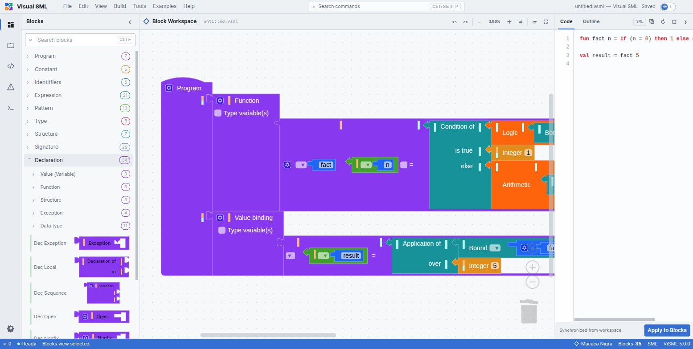
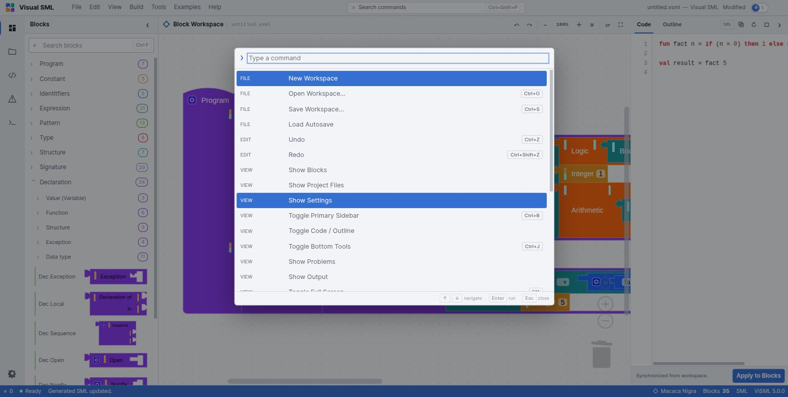

A block editor for the whole of Standard ML
ViSML does not simplify Standard ML down to something block-shaped. It takes the language's actual grammar — all 42 non-terminals of it, core and Modules alike — and gives every production its own block. You build a program by assembling grammar, and the generated SML text falls out the other side.
What ViSML is
ViSML is a Blockly-based visual IDE for Standard ML. It generates real, textual SML source from the blocks you connect, and it parses SML text back into blocks — the same round trip, either direction. Its distinguishing choice is architectural: rather than merge or flatten SML's grammar into a friendlier subset the way most block editors do, ViSML's toolbox categories and block shapes are a direct mirror of the productions themselves. Building with blocks is meant to teach the grammar, not hide it.

Three things follow from that choice:
- The full language, not a beginner slice. Ten toolbox categories, 134 blocks in
total, cover core SML —
let,val/rec, multi-clausefun, datatypes, exceptions, tuples, lists, records,case/fn,while— and the entire Modules language: structures, signatures, functors, sharing, opaque and transparent ascription. - Two renderers you can swap at runtime. Macaca Nigra and Goropa draw the same grammar two different ways — one with grammar-shaped connectors, one styled to read like indented text code.
- A real generator and a real parser. Blocks compile to SML source text, and SML source text parses back to blocks. Both directions are round-trip tested against the language's full production set.
ViSML is one of the languages built at L-Workshop, and it sits apart from its siblings in one deliberate way: unlike B-Lambda and B-MJ, it has no execution semantics at all — no interpreter, no stepper, no abstract machine. What it has instead is a grammar-transformation pipeline, T2BB, that classifies every SML production and gives each class a matching visual treatment. That research grounding is why the blocks look and behave the way they do; it is covered in full in Renderers.
The workbench
ViSML's shell reads like a small code editor rather than a canvas with a palette bolted on. Six regions, most of them toggleable and all of them persisted to local storage:
| Region | What lives there | Toggle |
|---|---|---|
| Title bar | File, Edit, View, Build, Tools, Examples, Help | — |
| Activity bar | Blocks · Project files · Code outline · Problems · Output · Settings | — |
| Primary sidebar | The searchable, ten-category toolbox | Ctrl + B |
| Workspace | The block canvas itself, with zoom and the active renderer | — |
| Code / Outline panel | Generated SML text with Apply to Blocks, and a clickable outline tree | — |
| Bottom dock | Problems, Output — editor events, not program output | Ctrl + J |
Every one of those regions is resizable, and their sizes, the sidebar's open/closed state, the active renderer, the theme, and the autosave interval all survive a reload. The toolbox itself carries a search box — Ctrl + F — that filters blocks by name across every category and opens whichever ones match.
Perspectives
ViSML keeps this simple: two perspectives, not a matrix of layout presets. Edit is the working arrangement — sidebar, workspace and Code panel all visible. Presentation maximises the workspace for teaching or screen-sharing, hiding everything else until you leave it.
| Perspective | Arranged for |
|---|---|
| Edit | Building a program: toolbox, workspace and Code panel together |
| Presentation F11 | Teaching: a maximised canvas. Leaving it restores the previous layout. |
Command palette
Press Ctrl + Shift + P, or F1, for a single filterable list of every command, grouped by the menu it comes from — File, Edit, View and onward — with its keyboard shortcut shown alongside it.

The full command list, grouped exactly as the palette groups it, is in the reference chapter.
Files and autosave
Workspaces save as .vsml files — plain JSON, Blockly's own modern workspace
serialization. Nothing is uploaded anywhere; save and open are ordinary browser file operations.
- New / Open / Save Workspace, from File — Ctrl + O to open, Ctrl + S to save.
- Load Autosave restores the local backup after a crash or a closed tab.
- Autosave interval is a Settings slider, 1–20 minutes, defaulting to 2. The status bar shows Autosaved HH:MM once it has run.
Built-in examples
Seven worked programs live under the Examples menu, each isolating one idea — and the last is the only one in the family that exercises the Modules language rather than the core.
| Example | Demonstrates |
|---|---|
| Factorial | Recursive fun, multi-clause pattern match on 0 /
n, arithmetic, plus a separate val application |
| Case Match | case…of with list patterns [] /
x::_, wildcard fallback, string results |
| Currying Function | A curried two-argument function, fun f a b = a + b |
| Uncurrying Function | The tuple-argument version, fun f (b, a) = …, applied to a
tuple — a direct contrast with Currying Function |
| Pattern Matching | Multi-clause literal matching, 1 / 2 / wildcard |
| Binary Tree | A polymorphic recursive datatype, 'a bt = LEAF of 'a | NODE of 'a bt * 'a *
'a bt |
| Signature and Structure | A full Modules demo — signature SUM, an opaquely ascribed
structure IntSum :> SUM, value and type specs |
If the workspace already has blocks, loading an example asks first, offering Replace or Merge — merge drops the example alongside what you have instead of discarding it. Cancel leaves everything untouched. The same convention as B-Lambda and B-MJ.
If you only load one example, make it Signature and Structure: it is the fastest
way to see that ViSML's grammar coverage is not a slogan — opaque ascription, type
specifications and a fn match all sit inside one small program.